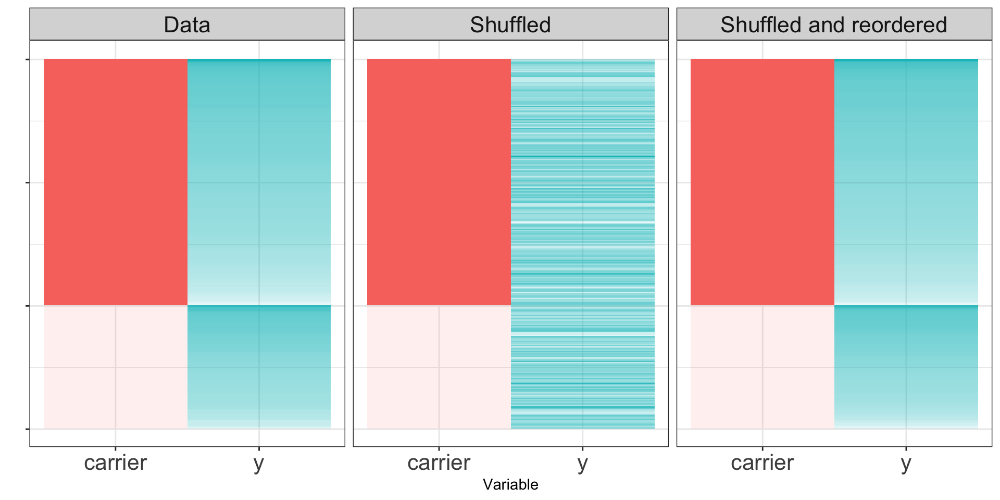
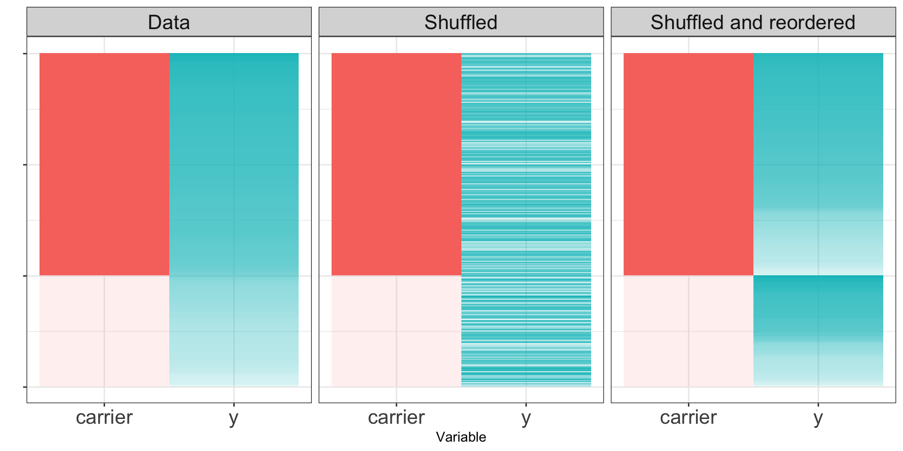

Compare the test statistic with the null distribution to obtain a P-value.
ex. \(P(|T|>|t|)\) where \(t\) is the observed test statistic.
Example: Two-sample \(z\)-test
Assumptions:
\(X_1, \ldots, X_m\) is a random sample from a distribution with mean \(\mu_1\) and variance \(\sigma_1^2\).
\(Y_1, \ldots, Y_n\) is a random sample from a distribution with mean \(\mu_2\) and variance \(\sigma_2^2\).
The \(X\) and \(Y\) samples are independent of one another.
The sample sizes are adequately large (usually appropriate if \(m>40\) and \(n>40\).
Example: Two-sample \(z\)-test
Hypotheses:
H_0: \(\mu_1=\mu_2\)
H_a: \(\mu_1\not=\mu_2\)
Example: Two-sample \(z\)-test
Under these assumptions, \(\overline{X}-\overline{Y}\) is approximately normal and the test statistic \[Z=\frac{\overline{X}-\overline{Y}-(\mu_1-\mu_2)}{\sqrt{\frac{S_1^2}{m}+\frac{S_2^2}{n}}}\] has approximately a standard normal distribution when \(H_0\) is true.
Example: Two-sample \(t\)-test
When the samples are small, but the population distributions are approximately normal, the standardized test statistic \[T=\frac{\overline{X}-\overline{Y}-(\mu_1-\mu_2)}{\sqrt{\frac{S_1^2}{m}+\frac{S_2^2}{n}}}\] has approximately a \(t\) distribution with df \(v\) estimated from the data by
We can use the sleep data in R, which contains Student’s example data on the effect of two sleeping drugs on 10 patients, to test out the t.test() function.
t.test(extra ~ group, data = sleep)
Welch Two Sample t-test
data: extra by group
t = -1.8608, df = 17.776, p-value = 0.07939
alternative hypothesis: true difference in means between group 1 and group 2 is not equal to 0
95 percent confidence interval:
-3.3654832 0.2054832
sample estimates:
mean in group 1 mean in group 2
0.75 2.33
Permutation tests
Typically, for hypothesis testing, we need to know the sampling distribution of the test statistic when the null hypothesis is true.
In some cases, we can derive the null sampling distribution analytically.
What if we don’t know the sampling distribution under the null? A permutation test is simple way to estimate the sampling distribution for any test statistic, requiring only some exchangeability assumptions on the data.
Permutation tests
Example: Suppose we want to understand whether carrying a particular genetic variant affects an individual’s height \(y\).
carrier <-rep(c(0,1), c(100,200))# an example where y is independent of the genenull_y <-rnorm(300) # an example where y is dependent on the genealt_y <-rnorm(300, mean = carrier *5)
Permutation tests
If the null hypothesis is true, the distribution of \(Y\) for the carriers should look the same as the distribution for the non-carriers. If we permute the labels repeatedly, we can get resampled datasets.
If the null hypothesis is true, the shuffled data sets will resemble the original dataset. If the null hypothesis is false, the shuffled dataset may not look like the real data.
Null hypothesis true

Null hypothesis false

Permutation tests
Calculate a test statistic based on the observed data.
Repeatedly permute the group labels to create resamples. For each resample, compute the resample test statistic.
Compare the observed data test statistic with the distribution of resampled test statistics.
Permutation tests
In the case of our simulated data, we know the true distribution of the difference of sample means. We can thus use a \(t\)-test to perform our hypothesis test:
Two Sample t-test
data: null_y[carrier == 0] and null_y[carrier == 1]
t = -0.20376, df = 298, p-value = 0.8387
alternative hypothesis: true difference in means is not equal to 0
95 percent confidence interval:
-0.2703315 0.2196040
sample estimates:
mean of x mean of y
0.08703446 0.11239820
Permutation tests
Compare with the \(t\)-test for the alternative hypothesis data:
Two Sample t-test
data: alt_y[carrier == 0] and alt_y[carrier == 1]
t = -42.775, df = 298, p-value < 2.2e-16
alternative hypothesis: true difference in means is not equal to 0
95 percent confidence interval:
-5.360905 -4.889319
sample estimates:
mean of x mean of y
0.01365367 5.13876563
Permutation tests
For now, though, let’s pretend we don’t know the true null sampling distribution of our test statistic.
P-hacking refers to the practice of repeatedly performing hypothesis tests (and potentially manipulating the data) until a statistically significant P-values is obtained. Usually, only this final result is published, without mentioning all of the manipulations that came before.
P-hacking simulations
Suppose we simulate 25 observations of 8 variables which we know to be uncorrelated.
What if we perform a hypothesis test to test whether the correlation is zero between each pair of variables using cor.test()? With only 8 variables, we have 28 potential comparisons, the probability that we will (falsely) reject the null is already:
1- (0.95) ^28
[1] 0.7621731
Multiple testing simulations
set.seed(1029)no_signal_data<-matrix(rnorm(200), ncol =8) # 25 x 8 matrixpairs_to_compare <-combn(8, 2) # all combinations of 2 numbers from 1-8p_values <-c()for (i in1:ncol(pairs_to_compare)) { index_1 <- pairs_to_compare[1, i] index_2 <- pairs_to_compare[2, i] test_res <-cor.test(no_signal_data[, index_1], no_signal_data[, index_2]) p_values <-c(p_values, test_res$p.value)}print(min(p_values))
[1] 0.006656272
Multiple testing simulations
For this reason it is common to perform a correction to the p-values when many hypothesis tests are conducted.
Example: The Bonferroni correction divides \(\alpha\) by the number of tests performed to get the corrected significance level.